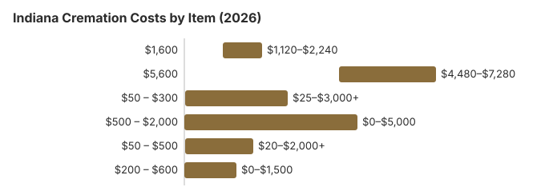

Cremation Costs in Indiana (2026)
If you're weighing cremation in Indiana, the first honest question is: direct cremation or cremation with a service? The gap between them (roughly $4,000 in Indiana) is where most of the decision lives.
Types of Cremation in Indiana, Including Direct Cremation
Indiana families have several cremation options, from simple direct cremation to full-service arrangements. The comparison below stays focused on service levels so you can weigh basic against more elaborate arrangements.
| Detail | Direct Cremation Packages | Full-Service Cremation |
|---|---|---|
| Typical price | $1,600 | $5,600 |
| Price range | $1,120 – $2,240 | $4,480 – $7,280 |
| What it is | The low-cost end of Indiana direct cremation, sometimes described as simple cremation or immediate cremation with no viewing or service. | A cremation service tied to a full service funeral, often including a funeral ceremony and body preparation before cremation. |
| How to think about it | The direct cremation cost is usually far below the national median cost for this kind of service, which is what keeps it the most affordable option. | Average cremation costs vary by provider, but the median cost here helps show the tradeoff between basic and more elaborate arrangements. |
| What's included | Most direct cremation packages cover removal, sheltering, permits, and the cremation itself, while additional fees, cremation fees, and a cremation urn may still be separate. | Direct cremation prices and broader cremation pricing can differ widely, so a full-service package adds staffing, viewing, and ceremony choices on top of the cremation. |
Methodology note: These figures are our estimates, not a survey of local providers, and they are not a quote or professional advice. See how we calculate them or read the full disclaimer.
State sources: Indiana Professional Licensing Agency; Ind. Code § 12-14-17.
How to Save on Cremation Costs in Indiana
Cremation costs in Indiana can be reduced with these strategies, and many families start by using a funeral cost calculator to compare cremation, burial, and service prices by state:
- Compare at least 3 cremation providers in Indiana: Ask each cremation provider for the provider's general price list under the FTC Funeral Rule, and check whether professional services and any crematory fee are included or listed separately.
- Price direct cremation as standalone: Indiana funeral homes often bundle direct cremation into broader packages. Ask for the pure direct cremation price (transport, cremation, return of ashes only), and whether online arrangements lower the total.
- Ask about financial assistance: Help for funeral and cremation costs includes Indiana Medicaid Burial Assistance (up to $1,200), Social Security's $255 death benefit, and VA benefits if applicable; families planning a service without coverage can also review guidance on funeral costs when uninsured.
- Plan ahead: Planning ahead can help you compare prepaid plans, lock in prices, and avoid rushed decisions.
- Consider body donation: Body donation may be a lower-cost alternative in some cases, depending on program eligibility and what expenses remain.
- Check other benefits: Veteran benefits may provide burial or plot allowances through VA Burial Benefits for eligible veterans, and Social Security may provide a $255 lump-sum death benefit for qualifying individuals.
- Know the timeline and requirements: Indiana law requires a 48-hour waiting period before cremation, identification of the deceased is required beforehand, a licensed funeral director must handle removal and transport of the body (Ind. Code § 16-37, per Funeral Consumers Alliance), and a basic alternative container is generally sufficient. Death certificates and cremation permits can add to overall costs.
What Each Part of an Indiana Cremation Costs
Cremation pricing varies by package and provider, and itemized quotes may list basic services or a basic services fee, so reviewing a line-by-line breakdown can help you understand how Indiana fits into the wider cost range.
| Item | Average Cost | Range |
|---|---|---|
| Direct cremation | $1,600 | $1,120 – $2,240 |
| Cremation with service | $5,600 | $4,480 – $7,280 |
| Basic urn | $50 – $300 | $25 – $3,000+ |
| Memorial service | $500 – $2,000 | $0 – $5,000 |
| Cremation jewelry | $50 – $500 | $20 – $2,000+ |
| Scattering service | $200 – $600 | $0 – $1,500 |

The Federal Trade Commission's Funeral Rule requires funeral providers to give itemized pricing on request, which helps families compare cremation fees and professional services.
For context, traditional full-service burial in Indiana often runs about $10,000 to $12,000, well above the median cost of direct cremation.
Cremation Trends Around Indiana
Most Indiana crematories are operated by funeral homes rather than standalone facilities, which means direct cremation in Indiana usually goes through a funeral home intake even when no service is attached. This does not materially change the $1,600 price point in Indiana, but it means the intake paperwork and authorization timelines mirror those of a full-service arrangement.
- Compare providers carefully by requesting the general price list and reviewing line items such as professional services and any separate crematory fee.
- The Federal Trade Commission Funeral Rule requires funeral providers to disclose itemized pricing, which makes it easier to spot hidden charges.
- Plan ahead with a prepaid or pre-need contract if available, since some agreements lock in current cremation rates against future increases.
- Look into aid programs if cost is the main concern: Indiana's Burial Assistance Program pays up to $1,200 toward funeral or cremation costs and $800 toward cemetery costs, but only if the person was in an eligible Medicaid category at death (MA A, MA B, MA D, MA DW, MA SI or MA R), or had applied and was later found eligible. The funeral home or cemetery, not the family, files State Form 35937 with FSSA within 90 days of the death.
- Social Security may pay a one-time $255 death benefit to eligible survivors, and VA burial benefits may reimburse cremation costs for eligible veterans.
- Many families also compare what happens after cremation, since the choice of a permanent resting place can affect total cost as much as the service itself. Options range from keeping ashes at home in keepsake urns or cremation jewelry to placing them in a cemetery plot as a more traditional final resting place, and our Indiana burial cost guide prices the plot and opening-and-closing charges that an urn burial in an Indiana cemetery still involves.
- If you are considering scattering ashes, ask about cemetery scattering gardens and whether local rules allow the same memorial choice on private property.
- Some people prefer a natural setting in state parks, while others ask whether a water burial is permitted and what container requirements apply.
Cremation Resources
- Funeral Consumers AllianceNonprofit advocacy: compare cremation providers
- Cremation Jewelry GuideMemorial keepsakes and remembrance options
- Pennsylvania burial costs overviewState-specific example of traditional burial pricing
- Cremation vs. Burial CostsSide-by-side cost comparison
- Pet Cremation CostsOptions and prices for pet cremation and memorials
- Final Expense InsuranceCoverage options to help pay for cremation costs
- Vermont funeral costsAnother regional benchmark for funeral and cremation pricing
Compare Funeral Costs
- Average Funeral Cost in 2026National cost breakdown with real prices
- Cremation vs. Burial Cost ComparisonSide-by-side price comparison to help you decide
- Funeral Cost BreakdownEvery line item explained: know what you're paying for
- Cheapest Funeral OptionsLower-cost alternatives, with typical price ranges
- Direct Cremation: Most Affordable OptionNFDA 2023 median $2,645 with a family-supplied container (latest available)
- How to Compare Funeral PricesStep-by-step guide to getting the best price
Before You Sign for Cremation in Indiana
When considering cremation in Indiana, keep these important points in mind:
- Ask each Indiana provider whether its direct-cremation price includes the crematory fee, the container and the transfer from the place of death, since those are the items most often listed separately.
- Direct cremation, sometimes called simple cremation or immediate cremation, is usually the lowest-cost option, and direct cremation in Indiana typically costs $1,120 to $2,240, with $1,600 as the statewide average in our estimate, the same range shown in the price table on this page. Most direct cremation packages focus on the essentials and skip costs related to embalming and venue rentals, which helps keep cremation fees lower.
- Full-service cremation includes a funeral ceremony and body preparation, and full-service cremation can exceed $6,000 in total costs depending on the services selected. The gap often comes down to added staffing, viewing, and ceremony choices.
- Indiana law establishes who has authority over final disposition, and a funeral planning declaration can control that order when there are disputes among family members, including a surviving spouse or adult children. For most families, the person with legal authority must provide written authorization before the cremation process can move forward.
- Under Indiana law, funeral directors handle permits and filing requirements, including the death certificate, and the Indiana Department of Health oversees key rules tied to cremation. A traditional casket is not required, and providers may use an alternative container or a basic alternative container for transport and cremation; embalming is generally not required for direct cremation.
- After cremation, cremated remains can be kept, buried, or scattered according to applicable rules and the wishes of the authorized decision-maker. Direct cremation packages and other cremation service quotes may also include extra fees and merchandise selections such as urns, which can significantly affect the final cost of cremation.
Frequently Asked Questions
What does cremation cost in Indiana in 2026?
If you're asking how much does cremation cost in Indiana, prices run from about $1,120 to $2,240 for direct cremation depending on the provider and package, and from about $4,480 to $7,280 (around $5,600 on average) when paired with a viewing or ceremony. For how direct cremation is priced nationally and what a basic package should include, see the direct cremation cost guide.
What types of cremation are available in Indiana?
Families in Indiana can choose from several cremation options: direct cremation ($1,600), often also called immediate cremation for simple low-cost arrangements; cremation with memorial service (ceremony held after cremation, often more flexible on timing); and traditional cremation ($5,600), a full funeral service before cremation. Direct cremation is the most affordable option because it bypasses visitations and formal ceremonies, while a cremation service with added ceremony includes more planning and event costs.
What legal requirements apply to cremation in Indiana?
The core rule comes from IC 23-14-31-36. Indiana bars cremation less than 48 hours after death unless the city or county health officer waives it in writing; an authorizing agent must sign.
Indiana arrangements may also be directed through a funeral planning declaration under state law. If an Indiana death falls under the medical examiner or coroner, that office has to release the body before any cremation.
Complaints about how a crematory or funeral home handled these steps go to the Indiana Professional Licensing Agency (317-234-3031).
Is ash scattering legal in Indiana?
Check Indiana local ordinances and any park-specific rules before proceeding. For many families, scattering ashes can symbolize letting go and honoring memory, while burial in a cemetery or placement in a cemetery plot or columbarium can provide a permanent resting place.
Why is cremation growing in Indiana?
According to the National Funeral Directors Association, the national median cost helps benchmark how Indiana prices compare with broader funeral and cremation trends. In Indiana, cremation costs an estimated $5,300 less than a traditional burial and leaves the memorial date open; the state's 48% cremation rate is 15.4 points below the 63.4% national rate that NFDA projected for 2025.
What is the timeline for cremation in Indiana?
Indiana's legal clock sets the pace. IC 23-14-31-36 bars cremation less than 48 hours after death unless the city or county health officer waives it in writing, and the authorizing agent must sign the cremation authorization. The death certificate and the permit for disposition have to be completed first.
According to the Cremation Association of North America, the cremation itself lasts anywhere from 30 minutes to more than two hours, depending on the body, before the remains cool and are processed. In practice, ask the funeral home for its usual return date and whether it charges extra to speed it up.
Do I have to skip the service if I choose cremation in Indiana?
A memorial gathering after cremation is also a common alternative to a full funeral ceremony, letting families choose any venue or date. Of the Indiana prices above, only direct cremation at $1,600 omits the service entirely.
More for Indiana
Marion County dropped its cremation authorization fee
Indiana lets a funeral home or crematory ask the local coroner for a cremation authorization before the death certificate is final. Marion County, which covers Indianapolis, used to bill for that step. Since October 29, 2025, the coroner's office has charged nothing for cremation waivers, and invoices dated before then no longer have to be paid (Marion County Coroner's Office; checked October 29, 2026).
If a funeral home's price list for a Marion County death still shows a coroner authorization charge, it is fair to ask what it covers. The office says it will notify funeral homes if fees return, and any change would not be retroactive.
Cremation rules and help in Indiana
Crematories and the funeral homes that sell cremation in Indiana answer to the Indiana Professional Licensing Agency (317-234-3031).
For a cremation in Indiana, state law (Ind. Code § 16-37) reserves removing and transporting the body for a licensed funeral director, according to the Funeral Consumers Alliance, so even the $1,600 direct cremation in the table runs through a licensee.
Timing and permits: Indiana bars cremation less than 48 hours after death unless the city or county health officer waives it in writing; an authorizing agent must sign (IC 23-14-31-36).
Indiana FSSA's help for Medicaid recipients is split into up to $1,200 for the funeral home and $800 for the cemetery, and the claim has to be filed within 90 days (Ind. Code § 12-14-17); ask the local FSSA office how those amounts apply to a cremation. (Source: Ind. Code § 12-14-17.)
Choosing cremation does not give up an Indiana veteran's cemetery benefit; urns can be interred in national cemeteries free of charge. Options in Indiana include Marion National Cemetery (765-674-0284), Crown Hill National Cemetery Annex (317-916-5460, cremated remains only), and New Albany National Cemetery (502-893-3852, cremated remains only). See cem.va.gov.
Next steps for a cremation in Indiana
- Get written cremation prices from at least two Indiana providers and compare what each direct cremation price includes.
- Allow at least 48 hours after death in Indiana, plus time for the permit, before the cremation date.
- Ask Indiana DFR how the $1,200 funeral and $800 cemetery split applies to a cremation before the 90 days run out.
- Note the board's number, 317-234-3031, before you pay a cremation provider.